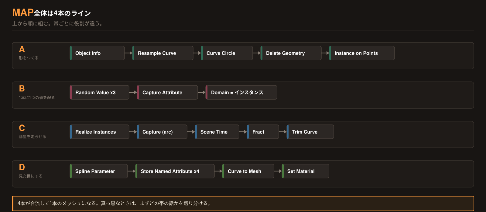
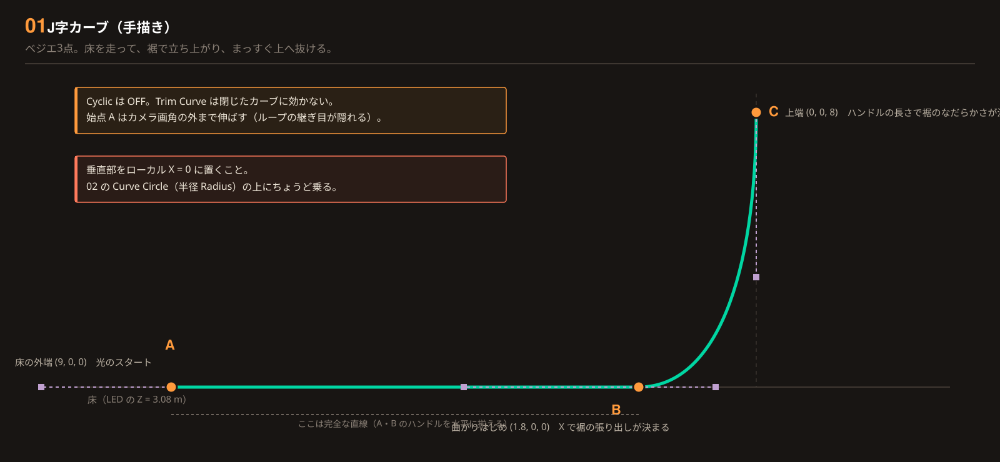
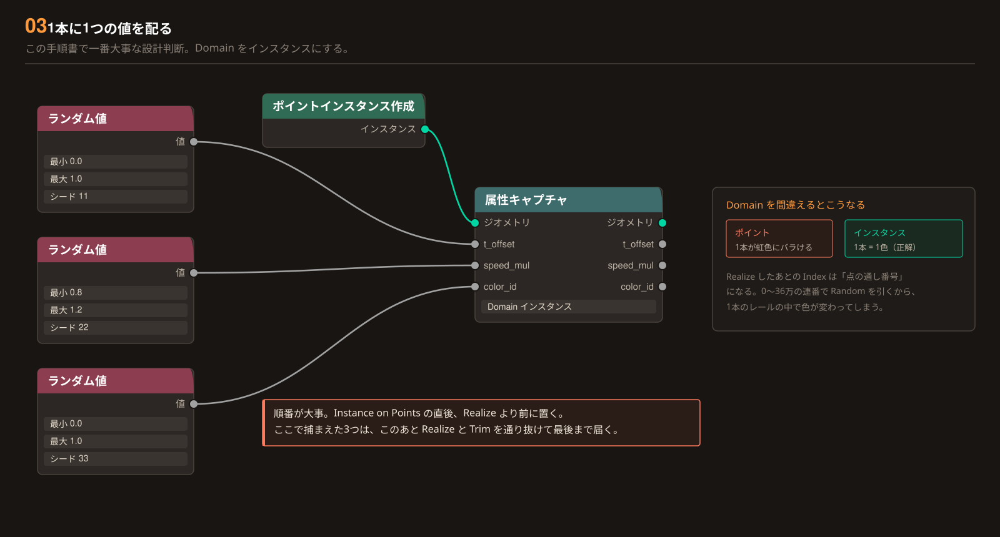
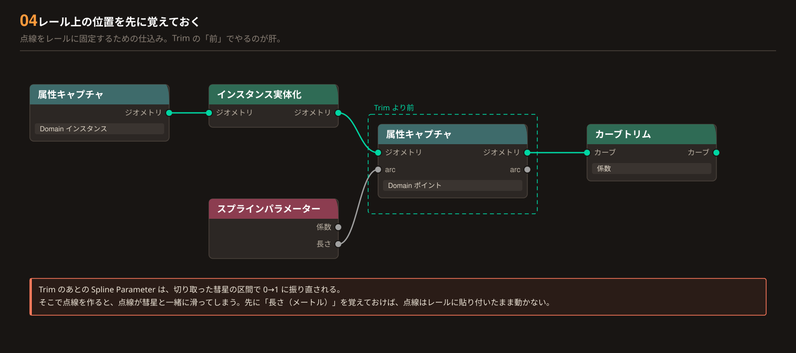
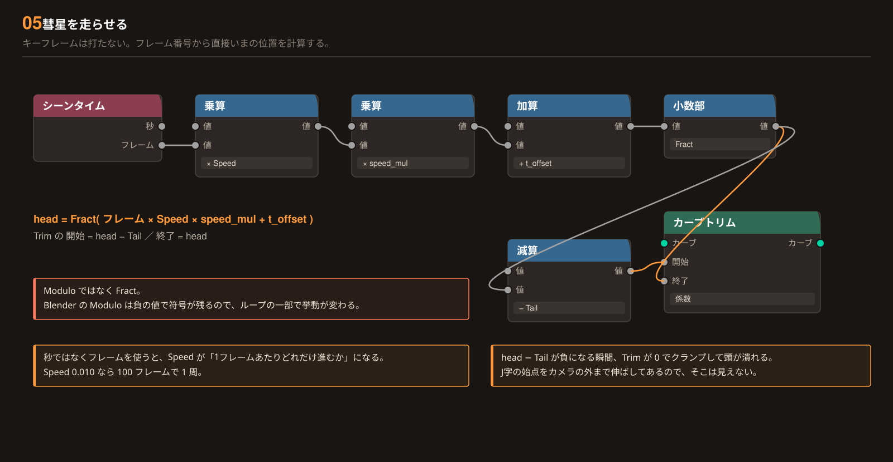
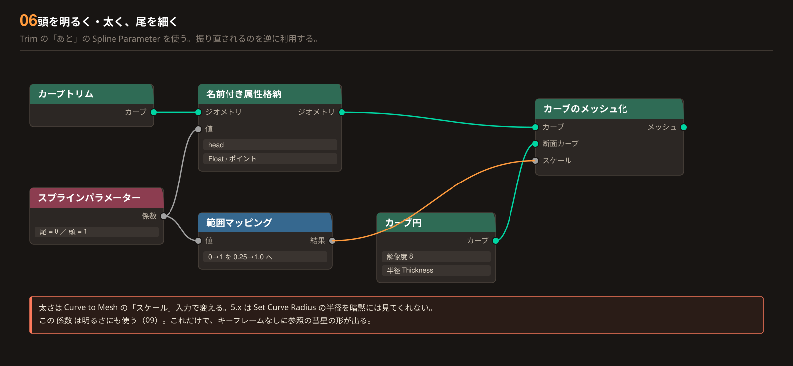
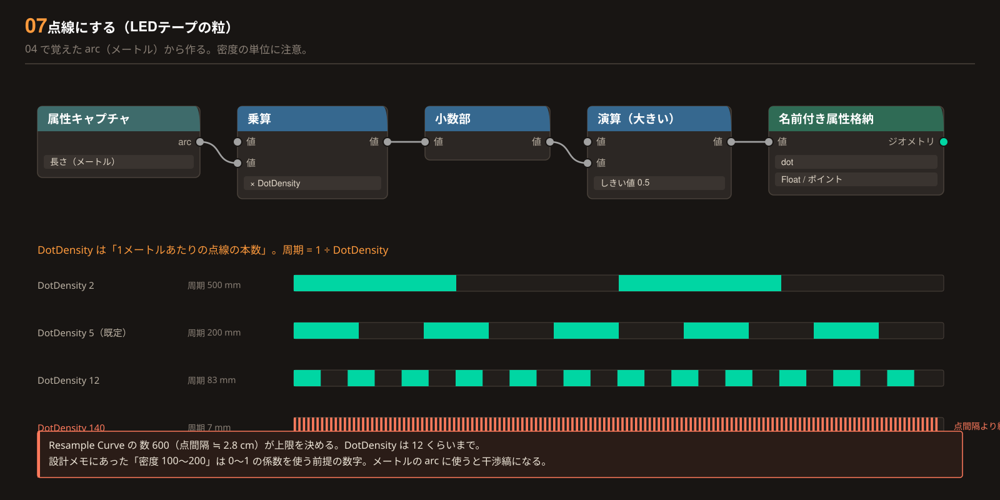
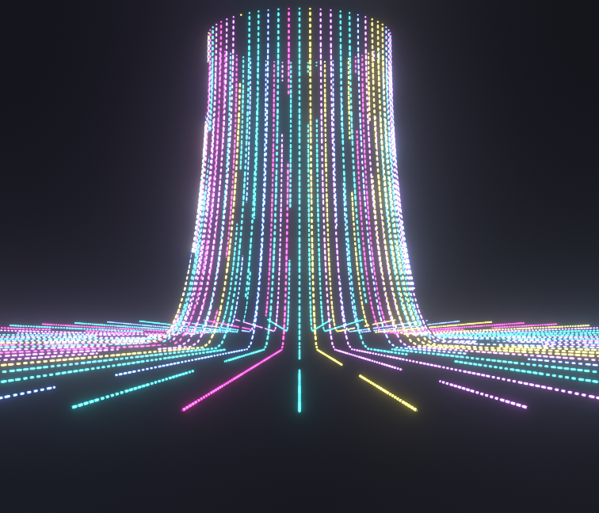
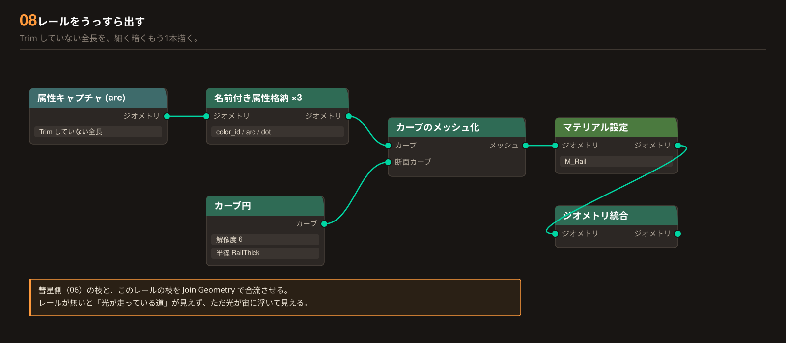
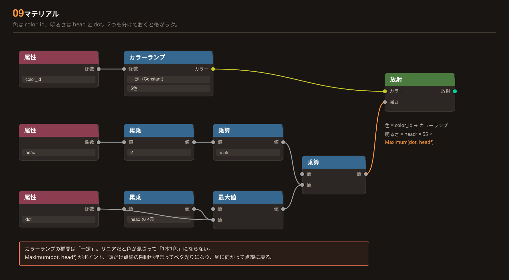

Blender 5.2 LTS / Geometry Nodes / EEVEE
光を下から
駆け上げる。
円周に並べた J 字のレールを、色とりどりの光が下から上へ走り抜けます。キーフレームは1つも打ちません。フレーム番号から「いまどこを走っているか」を直接計算するので、尺を変えても速度を変えても壊れません。
Result / 到達点
できあがり
UP_roll_light_04.blend の絵です。1本ごとに色・速度・スタート位置がバラバラで、下から上へ何度でもループします。



J 字のレールを手で描く
ノードではなく、ふつうのカーブオブジェクトを1本置きます。ベジエ3点。床を走って、裾で立ち上がって、まっすぐ上へ抜ける形です。
追加 → カーブ → ベジエ ／ 名前は J_Rail
- A 床の外端（光のスタート）
- 9, 0, 0
- B 曲がりはじめ（裾の張り出し）
- 1.8, 0, 0
- C 上端（光のゴール）
- 0, 0, 8
- A・B のハンドル
- 水平に揃える
- C のハンドル（下向き）
- Z −3.2
- Cyclic（閉じる）
- OFF
Radius）の上に、ちょうど乗るようにするためです。
ずれるとどうなる？
Trim Curve が効きません。05 で光が動かなくなります。
円周に並べる
空のメッシュにジオメトリノードを付けて、そこに J_Rail を呼び込みます。円の上に、外向きで立てて並べます。
Geometry Nodes
- Object Info / Object
- J_Rail
- Object Info / Transform Space
- Original
- Resample Curve / Count
- 600
- Curve Circle / Resolution
- 60
- Curve Circle / Radius
- 3.3
- Align Rotation to Vector / Axis
- X
- Align Rotation to Vector / Pivot
- Z
- Delete Geometry / Domain
- Point
- Delete Geometry / Selection
- Index > Count
600 の根拠
Index > Count の Delete Geometry で減らします。
なぜ遠回りするのか
Count というただの数値にキーを打つだけで済むからです。Resolution を直接アニメーションさせると、増えるたびに全部のレールの位置が変わってしまいます（拡張編）。
1本に1つの値を配る
「このレールは何色か」「どれくらい速いか」「どこからスタートするか」を、レール1本につき1つずつ決めます。この手順書で一番大事な設計判断です。
Instance on Points の 直後（Realize より前）
- Capture Attribute / Domain
- Instance
- capture 1 ／ t_offset
- Random 0.0 〜 1.0 ／ seed 11
- capture 2 ／ speed_mul
- Random 0.8 〜 1.2 ／ seed 22
- capture 3 ／ color_id
- Random 0.0 〜 1.0 ／ seed 33
Instance にしてください。初期値の Point のままだと、1本のレールの中で色が虹色にバラけます。
なぜ Point だとバラけるのか
Realize Instances を通すと、それまで「60本のインスタンス」だったものが「36万個の点」になります。Point ドメインで Random Value を引くと、その点ひとつひとつが別の乱数をもらってしまう。Instance ドメインなら、まだ「60本」だった時点で値が決まるので、1本につき1つの値が保証されます。
捕まえた値はこのあと Realize と Trim を通り抜けて、最後まで届きます。

レール上の位置を先に覚えておく
実体化してから、「レールの根元から何メートルの地点か」を全部の点に覚えさせます。07 の点線をレールに貼り付けるための仕込みです。やる順番が全てです。
Capture Attribute（03）の あと
- Capture Attribute / Domain
- Point
- capture ／ 名前
- arc
- Spline Parameter のどの出力か
- Length（メートル）
なぜ滑るのか
Spline Parameter は、切り取った光の区間で 0→1 に振り直されます。つまり「光の中での位置」になってしまう。それを使って点線を作ると、点線が光にくっついて動きます。Trim の前に「レールの根元から何メートルか」を覚えておけば、Trim はその値を引き継ぐだけなので、点線はレールに貼り付いたまま動きません。LEDテープの上を光が通っていく、という絵にはこちらが必要です。

光を走らせる
ここで動きます。フレーム番号から「いま頭がどこか」を計算して、レールのその区間だけを切り取ります。キーフレームは打ちません。
Geometry Nodes
- Scene Time のどの出力か
- Frame
- Math ① Multiply
- × Speed（0.010）
- Math ② Multiply
- × speed_mul（03）
- Math ③ Add
- ＋ t_offset（03）
- Math ④
- Fract
- Trim Curve / Mode
- Factor
- Trim Curve / Start
- head − Tail
- Trim Curve / End
- head
Modulo ではなく Fract。Blender の Modulo は負の値で符号が残るので、ループの一部だけ挙動が変わります。Speed が「1フレームで進む割合」になります。0.010 なら 100 フレームで 1 周。尺に合わせて決められるので分かりやすいです。
頭を太く、尾を細く
切り取った区間を筒にします。このとき頭から尾に向かって細くすると、一気に「光の玉が走っている」ように見えます。
Trim Curve の あと
- Store / Name
- head
- Store / Data Type, Domain
- Float / Point
- Map Range / From
- 0 → 1
- Map Range / To
- 0.25 → 1.0
- Curve to Mesh / Profile
- Curve Circle（Resolution 8）
- Curve Circle / Radius
- 0.07（Thickness）
Curve to Mesh の Scale 入力で。5.x は Set Curve Radius の半径属性を暗黙には見てくれません。太さが変わらないときはここです。
点線にする
ベタ塗りの光ではなく、LEDテープのような粒々にします。04 で覚えておいた arc をここで使います。
Geometry Nodes
- Multiply
- × DotDensity（5.0）
- Greater Than / しきい値
- 0.5
- Store / Name
- dot
DotDensity の単位は「1メートルあたりの本数」です。周期 = 1 ÷ DotDensity。5 なら 20cm おき。
大きい数字を入れると壊れます
arc は Spline Parameter の Length、つまりメートルの値です。0〜1 の割合ではありません。ここに 140 のような数字を入れると周期が 7mm になり、02 の Resample の点間隔（2.8cm）より細かくなって、点線ではなく干渉縞（モアレ）が出ます。実用上の上限は 12 くらいです。

レールをうっすら出す
光が走る「道」も、かすかに見えているほうがそれらしくなります。Trim していない全長を、細く暗くもう1本描いて合流させます。
04 の Capture Attribute から枝分かれ
- Store する属性
- color_id / arc / dot
- Profile / Resolution
- 6
- Profile / Radius
- 0.016（RailThick）
- Set Material
- M_Rail
Join Geometry で合流させます。マテリアルはそれぞれの枝で Set Material しておけば、1つのオブジェクトに2枚のマテリアルが乗ります。

色と明るさをつける
マテリアルは2枚。彗星用とレール用です。色は color_id、明るさは head と dot と役割を分けておくと、あとの調整がラクです。
Shading ／ M_Comet
- Color Ramp / Interpolation
- Constant
- Color Ramp / 色
- マゼンタ・シアン・イエロー・青・紫
- Attribute / Type
- Geometry
- M_Rail の明るさ
- 0.08 × dot（head は使わない）
Constant。Linear のままだと色が混ざって「1本1色」になりません。Maximum(dot, head⁴) がこのステップの肝です。頭のところだけ点線の隙間が埋まってベタ光りになり、尾に向かって点線に戻ります。
これが無いとどうなるか
head⁴ は「頭のごく近くだけ 1 に近づく」カーブです。Geometry のままでOK。04 で Realize 済みなので、属性はメッシュの点そのものが持っています（インスタンスのままなら Instancer が要りますが、この組み方では不要です）。
光らせる（ここで9割つまずきます）
ノードは完成しているのに「光らない」「色が眠い」となる場所です。ノードではなくレンダー設定の話です。
- Compositing → Glare / Type
- Bloom
- Glare / Quality
- High
- Glare / Threshold
- 1.0
- Glare / Strength, Size
- 1.0 ／ 6.0
- Color Management → View Transform
- Standard
- World の背景
- 黒（Strength 0）
- 出力解像度
- 1512 × 1296
Glare ノードで作ります。3Dビューで見たいときは、ビューポート右上の Viewport Compositing を ON。Filmic のままだと、絶対にあの見た目になりません。Standard に変えてください。見た目の差で一番効く設定です。
Filmic だと何が起きるか
Extra / 拡張編
ワイプをつける
「冒頭で一気に増えて、最後は中央に寄って一本の柱になり、そのまま上へ抜ける」——これを後から足せるように、02 で下ごしらえしてあります。ノードは1つも足しません。
数値2つにキーを打つだけ
モディファイアのパネルに出ている Count と Radius に、普通のプロパティと同じように I キーでキーフレームが打てます。
- 冒頭「一気に増える」
- Count を 0 → 60
- 最後「中央に寄って柱になる」
- Radius を 3.3 → 0
- そのまま上へ抜ける
- Speed を上げる／カメラを上へ
J 字を手描きせずに作る
形を数値で管理したくなったとき用。01 の手描きカーブを、ノードだけで置き換えられます。
ただし最初は手描きのほうが速いです。形が決まってから置き換えるくらいでちょうどいいです。
属性は4つだけ
ジオメトリノードで作る属性と、その行き先の対応表です。この4行が頭に入れば全体が掴めます。
| 属性名 | 作る場所 | ドメイン | 行き先 |
|---|---|---|---|
| t_offset | 03 | Instance | 05 の head の計算（スタート位置をずらす） |
| speed_mul | 03 | Instance | 05 の head の計算（1本ごとの速さ） |
| color_id | 03 | Instance | Color Ramp → Emission の Color |
| arc | 04 | Point | 07 の点線（Trim の前で捕まえる） |
| head | 06 | Point | 太さ（Curve to Mesh の Scale）と明るさ |
| dot | 07 | Point | 明るさに掛ける点線マスク |
思ったとおりに出ないとき
この6つで、ほぼ全部が直ります。上から順に確認してください。
1 ／ 光らない・真っ黒
View Transform が Filmic ではありませんか。Standard にしてください（10）。次に Compositing の Glare が繋がっているか。EEVEE の Bloom チェックはもう存在しません。
2 ／ 1本のレールの中で色が虹色にバラける
Capture Attribute の Domain が Point のままです。Instance に変えてください（03）。
3 ／ 全部のレールが一斉に光る
Realize Instances が Trim Curve より後ろにあります。Realize 前はインスタンスが同じカーブデータを参照しているので、差が付きません（04）。
4 ／ 点線が光と一緒に滑っていく
arc の Capture Attribute が Trim より後ろにあります。前に移してください（04）。
5 ／ 点線ではなく干渉縞（モアレ）が出る
DotDensity が大きすぎます。単位は1メートルあたりの本数で、実用上限は 12 くらい。あわせて Resample Curve の Count が 600 あるか確認してください（07）。
パラメータ早見表
UP_roll_light_04.blend の実際の値です。モディファイアのパネルから触れます。
| 名前 | 既定値 | 動かすとどうなる | 備考 |
|---|---|---|---|
| Radius | 3.3 | 円筒が太く／細くなる | 0 にすると中央の柱になる |
| Count | 60 | レールの本数 | 最大は Curve Circle の Resolution（60） |
| Speed | 0.010 | 光の速さ | 0.010 で 100 フレーム 1 周 |
| Tail | 0.09 | 尾の長さ | カーブ全長に対する割合 |
| DotDensity | 5.0 | 点線の細かさ | 1mあたりの本数。12 以上はモアレ |
| Thickness | 0.07 | 光の太さ | Curve to Mesh の Scale に入る |
| RailThick | 0.016 | レールの太さ | レールだけに効く |